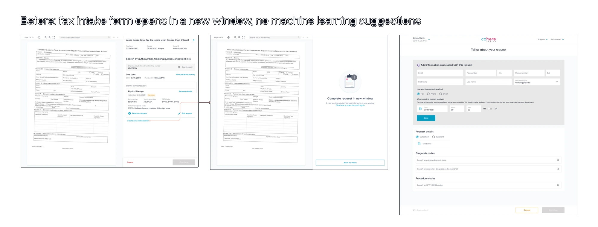
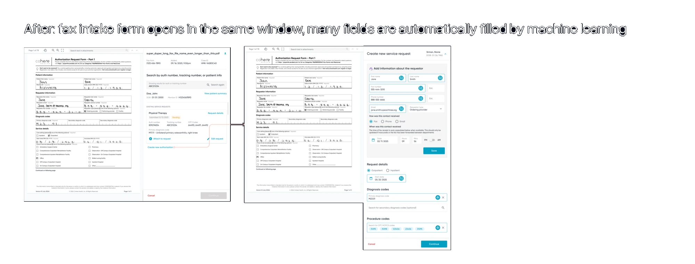
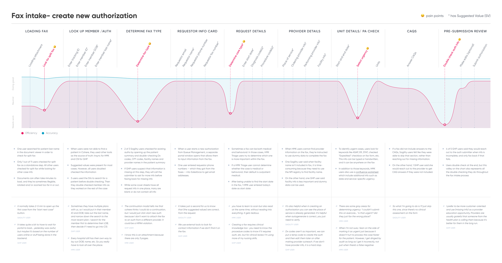

Redesigning an ML-powered fax intake co-pilot so specialists work directly against the fax while the form fills itself in
Redesigning the flow
I led the redesign of an ML-powered fax authorization intake co-pilot. Previously, intake specialists had to manually re-key every field from an incoming fax into a form before the data could reach the Cohere portal. I redesigned the flow so the fax document sits on one side and the form on the other, letting specialists work directly against the source while OCR runs in the background — as the model identifies fields on the fax, the matching inputs auto-fill.


Suggested action
A clickable prototype of the suggested action on the intake fax view. Pick a scenario, then click through it like a user would: attach, continuation, new service request, or no recommendation, in the MVP or with future phase ideas.
Research
To ground the redesign and guide ongoing iteration, I ran 11 user interviews alongside a time study. The output was a journey map that product teams across Cohere still reference today.
